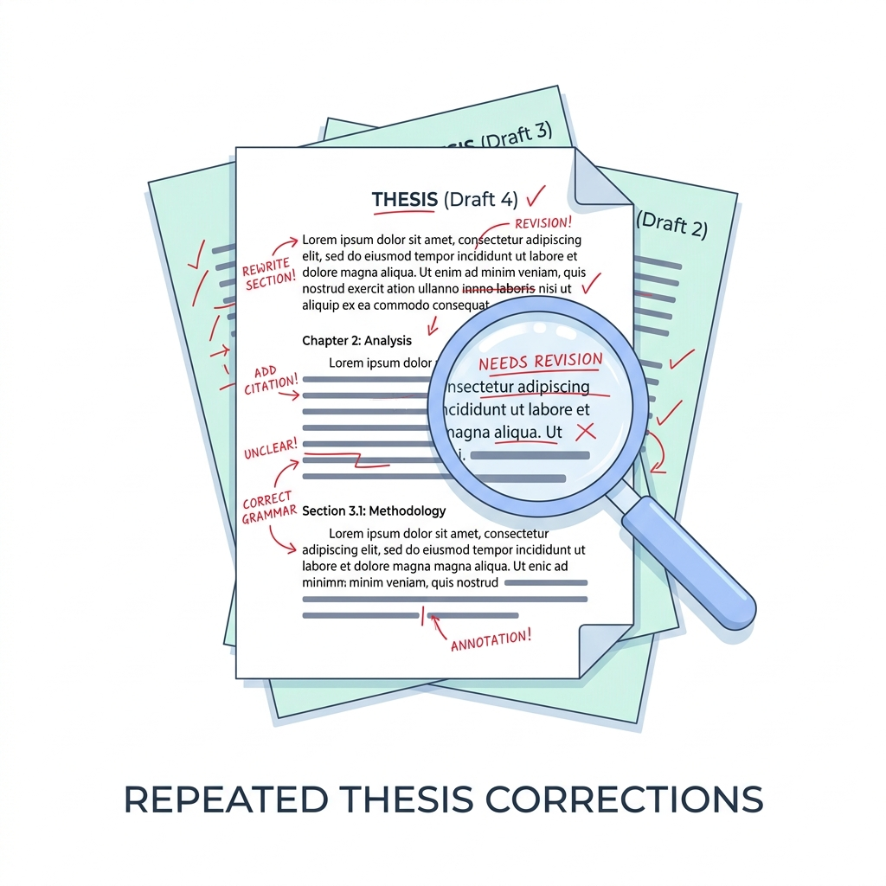
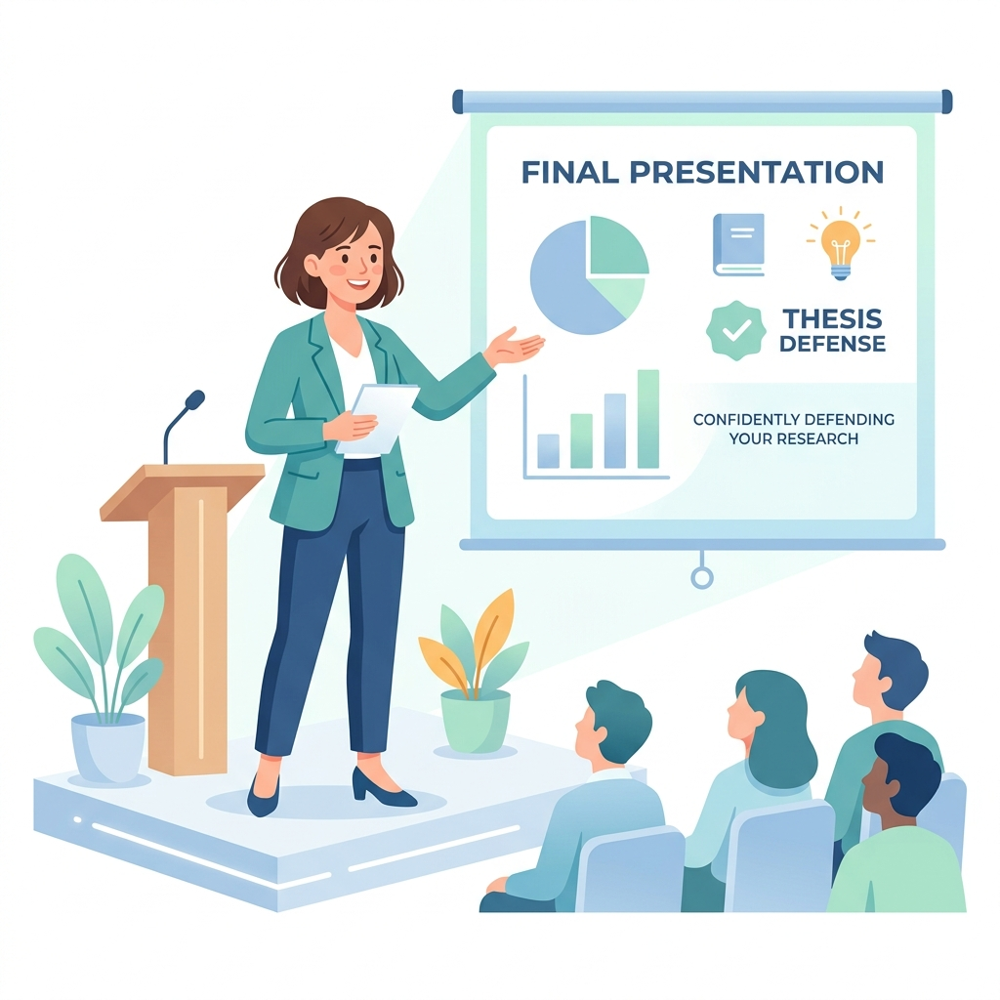

Avanza con tu tesis sin perder más tiempo
Recibe orientación metodológica rigurosa, revisión estadística y acompañamiento individualizado desde la delimitación del tema hasta la sustentación triunfal de tu grado o posgrado.
No saber por dónde empezar
Saber más
Observaciones reiteradas
Saber másFalta de tiempo laboral
Saber más
Inseguridad ante la réplica
Saber más¿Tu tesis se encuentra estancada?
Identificamos con precisión las trabas metodológicas que retrasan tu titulación o graduación.
Implementamos un proceso estructurado y comprobado diseñado para profesionales sin tiempo.
Con nuestra asesoría avanzarás de forma segura en cada capítulo, optimizando tus horarios y con la tranquilidad de contar con expertos de PremiumNET apoyándote.
Superar mi obstáculoElige la forma en que deseas avanzar
Ofrecemos alternativas transparentes de acuerdo a tu tiempo, autonomía y presupuesto:
Hazlo por tu cuenta
Ideal si cuentas con suficiente tiempo libre, experiencia previa en investigación científica y la disciplina para resolver tus dudas de manera independiente.
- Acceso 100% gratuito a guías descargables en PDF y matrices en Excel.
- Checklists metodológicos para normas APA 7ma ed. y Vancouver.
- Artículos técnicos en nuestro blog con ejemplos prácticos.
- Sin revisión directa de capítulos ni retroalimentación personalizada.
- Sin simulacros en vivo con jurado metodológico.
Avanza con asesoría especializada
Diseñado para profesionales y graduandos que necesitan optimizar su tiempo, superar observaciones complejas y asegurar su título con total solvencia.
- Orientación 1 a 1 con doctores y evaluadores metodológicos de tu área.
- Cronograma semanal estricto con entregas parciales y fechas límite claras.
- Revisión minuciosa de redacción, consistencia interna y análisis estadístico.
- Simulación de jurado con preguntas de réplica y feedback en video.
- Soporte continuo vía WhatsApp para dudas metodológicas rápidas.
Servicios Académicos Especializados
Soluciones flexibles ajustadas a la fase real en la que se encuentra tu investigación:
Asesoría Puntual
Resolución de bloqueos específicos o análisis de datos concentrado.
- Levantamiento de observaciones concretas
- Tratamiento estadístico (SPSS / Jamovi / R)
- Validación de instrumentos de recolección
- Sesión en vivo de 90 minutos con grabación
Acompañamiento por Etapas
Avance modular por capítulos clave de tu investigación.
- Módulo 1: Plan o Proyecto de Tesis Inicial
- Módulo 2: Marco Teórico & Estado del Arte
- Módulo 3: Marco Metodológico & Muestra
- Módulo 4: Análisis de Resultados & Discusión
Asesoría Integral
Acompañamiento holístico 360° desde la idea hasta el veredicto final.
- Dirección metodológica total 1 a 1
- Monitoreo de Turnitin con reportes oficiales
- Diapositivas y oratoria de sustentación
- Garantía de acompañamiento hasta la aprobación
Una ruta clara para desarrollar tu tesis
Dividimos el desafío en 4 fases secuenciales con entregables verificables:
Diagnóstico Académico
Evaluación integral del estado de la tesis frente a las directivas de grado de tu universidad y líneas de investigación aprobadas.
Plan de Trabajo Personal
Diseño de cronograma Gantt con metas semanales, asignación de tutor temático y estructuración del índice formal.
Desarrollo & Seguimiento
Redacción científica guiada, verificación de citas primarias en Scopus/WoS, y validación estadística con datos reales.
Preparación de Sustentación
Síntesis visual en diapositivas de alto impacto, modulación vocal y simulacro riguroso con jurados entrenados para objetar.
Historias de éxito de graduados con TesisPro
“Tenía meses trabada con las categorías teóricas. La claridad del metodólogo de TesisPro me permitió entender qué me pedía el jurado y subsanar todo en tiempo récord.”
“Trabajando en provincia era casi imposible coordinar con mi asesor universitario. El equipo de TesisPro me ordenó la vida académica con sesiones virtuales puntuales.”
“El simulacro fue exactamente igual a lo que me preguntó el jurado de la Decana de América. Entré segura y defendí mi muestra sin dudar un segundo.”
Biblioteca de Recursos Académicos Gratuitos
Descarga plantillas verificadas para acelerar la redacción formal de tu investigación:
Cómo elegir y delimitar el tema de tesis
Guía paso a paso para formular preguntas de investigación viables según líneas universitarias.
Plantilla Maestra de Matriz de Consistencia
Estructura validada con fórmulas para alinear problema, objetivos, hipótesis y variables.
Manual Práctico de Metodología Científica
Enfoques cuantitativos, cualitativos y mixtos con ejemplos reales aplicados al Perú.
Checklist de Normas APA 7ma Edición
Guía de citado formal, tablas, figuras y referencias bibliográficas más comunes.
Cronograma & Carta Gantt de Tesis
Hoja interactiva en Excel/Sheets para calendarizar cada hito hasta la sustentación.
Guía para la Sustentación Exitosa
Las 20 preguntas típicas de jurados en Perú y cómo responder con aplomo y solidez.
Desbloquea la suite completa de +30 recursos académicos
Recibe en tu correo el compendio completo con guías de bioestadística, ejemplos de marco teórico y manuales APA/Vancouver sin costo alguno.
Preguntas Frecuentes y Transparencia
Respuestas directas sobre nuestra metodología, ética y alcances de servicio:
Tu siguiente gran avance comienza con un plan estructurado
Deja de postergar la culminación de tu título profesional o grado de posgrado. Conversemos hoy mismo sobre tu investigación y tracemos la ruta hacia tu aprobación.